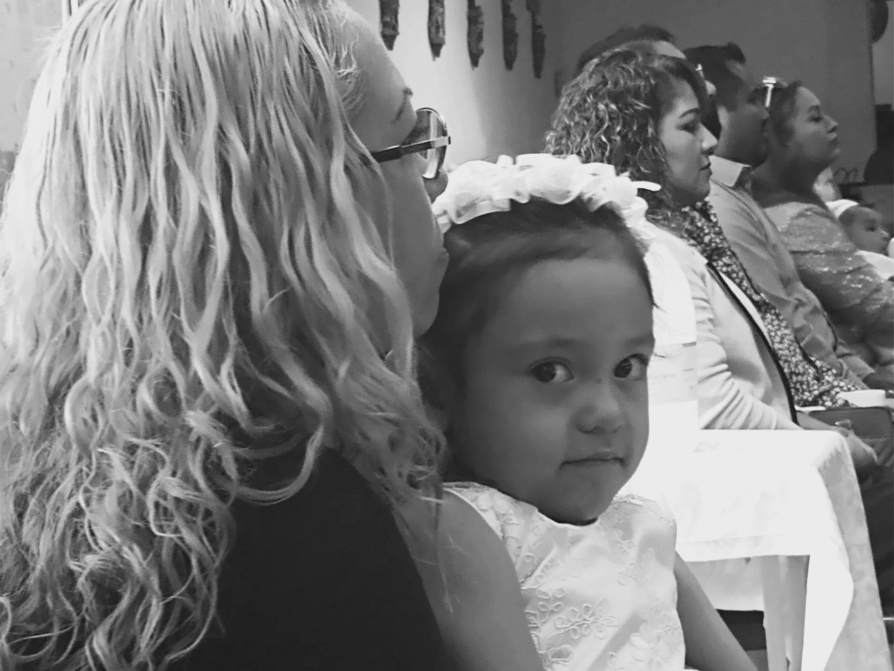
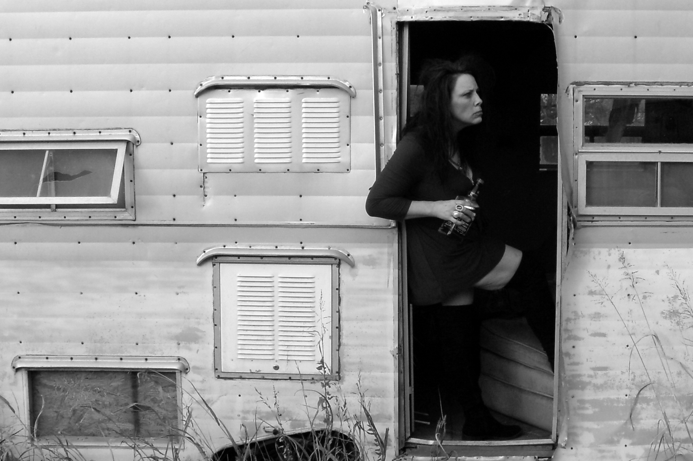
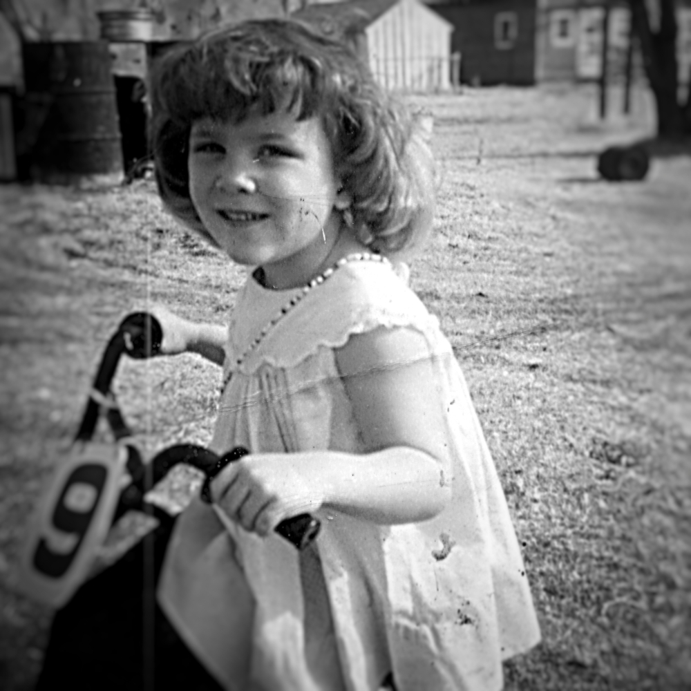

He Wept.
Original Fiction that Bleeds.Got Six Minutes?
Here are more amazing examples of how I write.
I like making a difference. (Photo by author.)
Waiting for Me
So much is at stake.
So much is at stake. (Photo by author.)
It's me again. The same stains on the carpet. The same fake smiles. The same magazines with missing covers and pages stuck together.
How long can I go on wishing every moment of every day that things were different?
Something dawned on me the other day when I was sitting in my therapist's waiting room. Like every other time it was a room full of women, some my age, some older.
There sure are a lot of unhappy women in this town!
That's right, and there's a reason for it.
Most of these women are unhappy because they have miserable lives. Being a wife, today, around here — it might as well be the Flintstones, except it isn't funny. Get married at 17, bang out a bunch of Rugrats, and clean up your husband's (and his buddies') mess for the next 30 years.
See if THAT makes you happy.
I know, I know.
This is “the heartland.” We have “family values.”
I was born and raised here. Don't tell me I don't appreciate family values. Real ones, not excuses for laziness and immaturity. Degrading your wife is not a family value. Never has been. Never will be. It is not a Christian value. It is not the kind of value that makes anything work anywhere for that matter.
The doctor and the experts on TV sit there and say that our unhappiness is due to an illness.
Why isn't our unhappiness due to what's really going on in our lives?
Why can't THEY admit that? Why can't WE admit that?
You think I would have gotten up and walked out when I saw that.
It seems to me that so much is at stake. Our potential — it's spiraling down the drain. You can see it, feel it, slipping away a little bit more every day.
That ought to make anyone profoundly unhappy.
These are the years that won't come back. We're wasting them on immature, porn addicted guys who want their mommies to clean up after them.
I married a boy in man's clothing who plays video games all day long but won't hold a job.
My sister married one who smokes pot non-stop! What was she thinking?
Probably the same thing I was — not thinking at all really. Just focused on the moment — what we were getting out of, getting away from, not getting into, getting stuck with.
When the doctor and the TV insist that we are ill instead of pointing out that we are being robbed of something valuable, the doctor and the TV are part of the problem, call it a mindset or whatever, that degrades us, that diminishes us. That makes us feel powerless. That makes it harder than ever for us to grow. That robs us of dignity and integrity for decades, for a lifetime even.
You think I would have gotten up and walked out when I saw that.
I didn't.
I needed my Xanax and my Ambien.
That's another way they trick you — get you hooked on pills you can't get off of.
Maybe somehow I can.
Maybe next time I will.

These are the years that won't come back. (Photo by author.)
My Masquerade
No one can take that away.
Tell me where I belong and how far I can go. (Photo by author.)
Mendoza.
Men-doh-zuh.
Maria Mendoza.
What do you picture when you read my name for the first time? What do you assume is true about my life?
Maybe you think you know the color of my hair or how tall I am. Maybe you think you know how far I went in school or the kinds of things I do — and don't do — for a living.
Maybe you think my life is pretty simple compared to yours. More limits than opportunities. More traps than triumphs.
The Maria Mendozas of this world are not someone you would ever want to trade places with. Not for a day. Not even for an hour.
Here's a thought.
You can't picture me because you don't know me. All you can picture is what someone called Maria Mendoza should look like, ought to be, based on your experience — all the Marias and Juanitas and Glorias and Doloreses and Roselias you've ever met and the places you've met them.
Maybe they cleaned your office overnight or a hotel room after you left.
Maybe they watched your kids or took your order for breakfast.
Maybe you blame them for having “too many babies”, filling up the Emergency Room when they get sick or the check out line at Costco when you're in a hurry.
Maybe you drive down deserted streets before the sun comes up trying to score with a girl who's poor.
Sure, picture me. Tell me who I am and what I'm good for. Tell me what I can and can't achieve. Tell me where I belong and how far I can go.
Tell me all those slogans and cliches about what it takes to succeed and be somebody. Tell me that they apply to those already seated at the table and not just those struggling to get in the door.
Do you know how black the sky appears at 3 AM? Or how empty it can seem at three in the afternoon?
Do you know what it's like to want something so badly that your throat feels tight and your skin crawls at the thought of not having it, because you know what it's like to go without, and that's no longer an option?
Do you know what it's like to want to be somebody you've never been, because it hurts too much to be the person you are?
Do you know what it's like to be driven by fear and self-contempt because the alternative seems ridiculous and so far out of reach it might as well be on the moon? Do you know how black the sky appears at 3AM? Or how empty it can seem at three in the afternoon?
In some dark corner of my soul there's a little girl who won't go away, no matter what I call myself or do for a living. She never deserved all the things that happened to her.
I am not ashamed of her; I — I love her. But I don't know what to do with her.
I don't want to make her vanish. I want to make her safe.
Maybe then she won't have to be so angry, so quick to get even, so desperate even after all these years.
Maybe then she can sleep without being afraid and see the world through innocent eyes again.
Maybe then she can love herself.
Maybe then she will finally understand that she already is somebody, and no one can take that away.
Sinceramente,
Maria.
I want to make her safe. (Photo by author.)
Paw-Paw
What she really wanted.
Mom got what she wanted most. (Photo by author.)
A little girl sits on a porch holding something precious in her hands.
The year he passed, Paw-paw (the good one, not the other) gave her a cotton comb for her birthday. Short stiff bristles and a wooden handle worn smooth from years of use. Paw-Paw's father gave it to him when Paw-Paw was a boy.
One day, Mom takes it, takes it and sells it to a neighbor, an acquaintance, somebody she just met.
Said they were broke. Needed money. Hurried off when she got it. A while later the screen door slams. The girl hears Mom opening drawers and cupboards in the kitchen.
"No god-damned matches." Mom's voice trails off.
For the price of an old cotton comb, a birthday gift from a man who left and won't be back, Mom got what she wanted most.
She had been to the store. Her purchases lay on the counter.
Beer and cigarettes.
A while later the screen door slams. (Photo by author.)